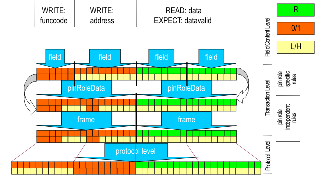

Encoding functions
Encoding takes field, like address, and transaction information, like write and combines them with the setup information. The setup information given for the corresponding pin roles, protocol level and timing specifications together with the field and the transaction result in a state character sequence / bit sequence that can be interpreted by the DUT.
Note Encoding functions are always applied from field level to protocol level.

A sequence of state characters is formed for each pin role and all transactions as part of the vector generation process.
Fields reading from the device are processed, too in order to know the position and number of bits to capture.
Functional changes
- Introduced in SmarTest 7.1.0